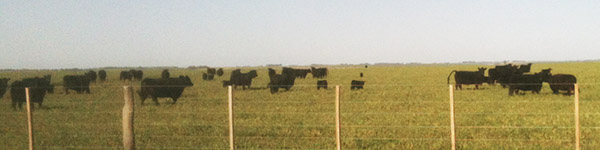
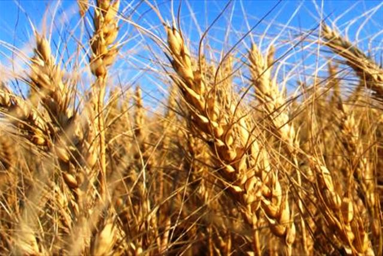

Windfarm Agrosustentable
Windfarm se ha mantenido fiel a sus orígenes, dedicándose principalmente a la cría de ganado bovino de la raza angus, negra. El plantel de reproductores es cuidadosamente seleccionado con la colaboración de reconocidos veterinarios.

El manejo agropecuario se realiza sembrando verdeos y sorgos forrajeros, que se brindan bajo la modalidad de autoconsumo en bolsa, rollos y/o en planta bajo la modalidad de sectorizado con alambrados eléctricos.
De manera complementaria Windfarm incluye en la rotación de los lotes, cultivos de trigo, cebada, sorgo, soja y maíz, utilizando la modalidad de siembra directa.

Los convenios con contratistas de la zona, le permiten a Windfarm tener una interesante flexibilidad y concentrar su capital de trabajo en la producción.
Windfarm tiene disponible esquemas de recepción de inversores, que le permiten a capitalistas que le interesen los negocios rurales pero que carezcan de experiencia en el sector, la posibilidad de ser parte del campo argentino.